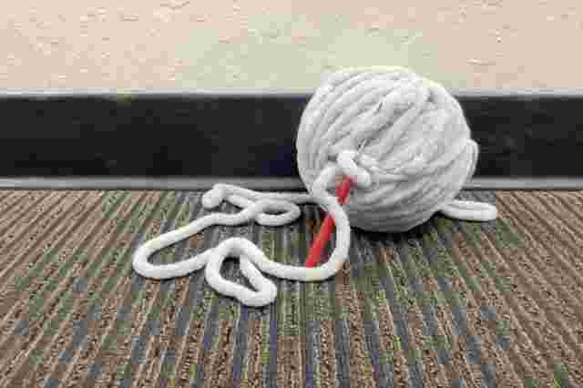

We started with the idea of recycled jewelery and added on the knitted bag packaging.  We make the jewelery with donated bottle caps and soda tabs that have been thoroughly cleaned. We handpaint the decorations on with paint markers. Then we seal it with mod podge to add the finishing touch and prevent scratches or marks